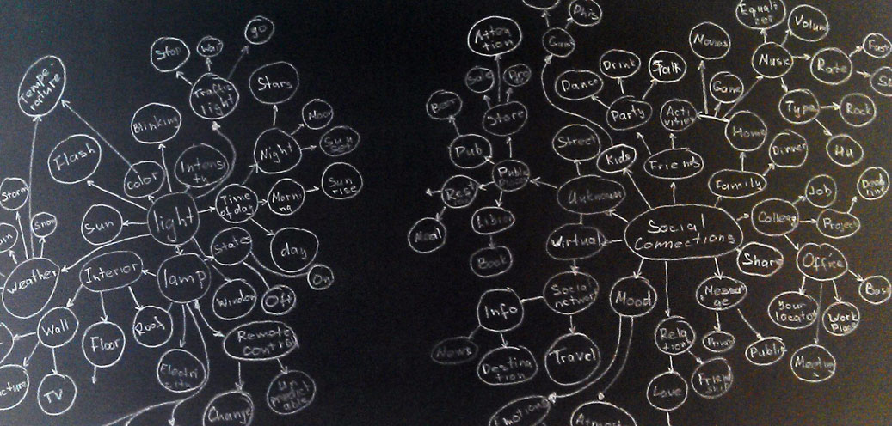
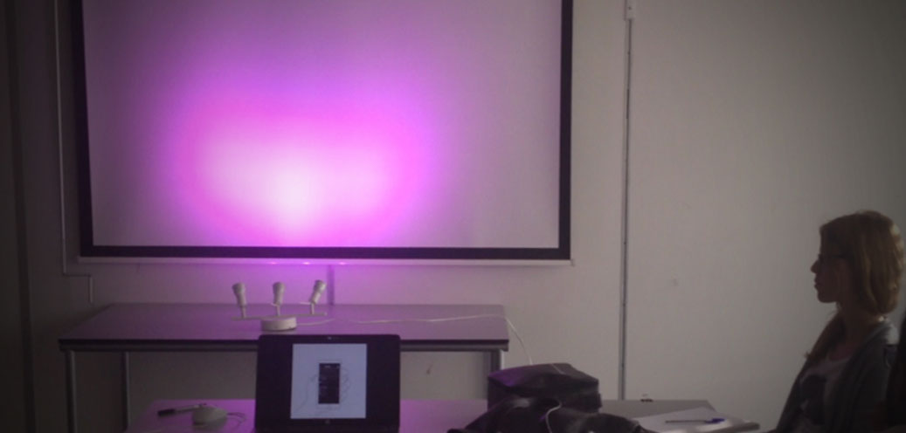

Client
Summary
This project was done for Philips Lightning exploring opportunities for Hue wireless lightning.
When
2015
Philips hue is a combination of LED lamps or strips that can change color of light. They connect through wireless with special device that philips calls ‘bridge’ and ‘bridge’ connects with an app on your phone/tablet/laptop. Hue app gives you possibility to change colors, brightness, etc of lamps.
Initial task
Philips hue is an interesting project but except of changing color of light in your room it does not do a lot that is why Philips looked for new meaning of hue lapms. The task was to design new meaningful application or service using the Philips hue lamps. Focus on the home environment, since the Hue is initially intended for home usage. Find new area of using hue lamps in social aspect.
Brainstorming
We used mindmap method to create associations with light and social connections.

As a result we got list of possible directions:
- Collaboratively creating the atmosphere in the same physical space
- Controlling lamps by gestures
- Sharing memories/experiences
- Creating a light jukebox with friends
- Physical interaction with lights: blending colors
- Solving conflicts among kids at home
- Hue and sports: motivate people/ create awareness on physical activity level
- Creating the same atmosphere on distance
- Use light to enhance musical experience
Staying in touch is a fundamental aspect in maintaining a long-distance relationship, whether in a family context or a friendship. As a result of brainstorm we selected several directions where to dig and identified final design brief:
Design an application for people that live apart from friends, family, beloved ones, to foster a feeling of connection, beyond the explicit verbal communication that available technology offers. Use light and music as a medium to trigger this feeling.
Key features
We completed the research including interviewing users, market research and we came up with the following requirements:
- Support a natural/daily relaxing activity
- Allow to share the experience and be unobtrusive
- Allow for customization
- Support gift giving/surprising
- Trigger a feeling of connectedness
How to connect music and color?
Actually, music was associated with colors throughout history. Some have suggested that Newton saw seven colors in the rainbow because there were seven natural tones in the musical scale. We found interesting to connect bassline of a song with the changing light. It was something new and all apps that we have seen triggered volume or intensity but not deeply that this. We trigger changing note in bassline and at this moment we chage color of a lamp to the different color.
Client
Summary
This project was done for Philips Lightning exploring opportunities for Hue wireless lightning.
When
2015
Prototype
The idea of the app is to share your experience in music and light with your friends. User broadcasts not only music but also light. So if you have Philips hue lamps at home you can use it.
Music handles our auditory perception and our eyes perceive light. For instance, people compined this two senses already in dance perfomances or in an equalizer.
Prototype
Philips Hue gives a nice API to manage light and manipulate with lamps via app or web interface. So based on the requirements, we developed InstaHue. InstaHue is a mobile and web application that empowers the user to create a home experience, while listening to a song. The key feature is that users can invite and share this experience with people in their friends list, or even broadcast to the world, or of course can get invited or join open experience “stations”.
For this we developed a fully working web application and the interface for a mobile version. It was fully interactive and we had possibility to evaluate it with users.
User testing
We evaluated the app with several participants and found some interesting things. A lot of people liked how filters work, they could change atmosphere in home just in one click.

During the testing we used different genres of songs. So people could listen different songs and compare how light reacts on it. Most of them noticed that light reacts nicely. Participants liked the social aspect of using the app. They found interesting idea of broadcasting and listening friends music. It brings people closer and gives feeling of connection.